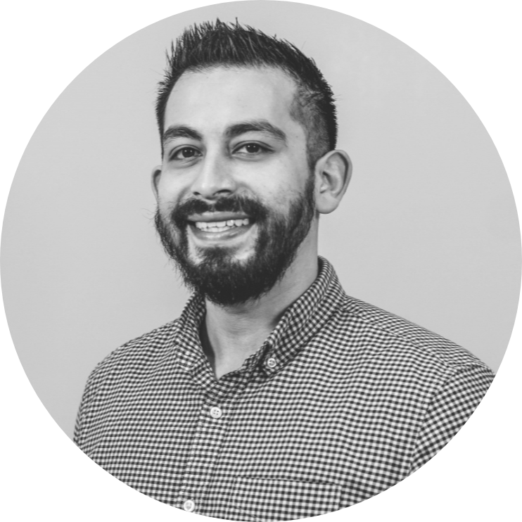

|  |
Adrian Cortinas
User Experience & User Interface Designer at USAA
I am a
Product | UX | UI | Designer with a background in urban design, city planning and landscape architecture.
My rigorous training in urban design has laid a strong design foundation allowing me to tackle
design problems at varying
scales, keeping the big
picture in mind, but paying
close attention to �ne details.
My work focuses on
human-centered design
processes which champion
research, iteration, execution
and delivery within
cross-functional team
settings. Working within this
realm, I am a versatile
designer who can perform
technical and artistic
assignments while always
keeping the company’s goals
in mind. I am resourceful, can
adapt swiftly, and I thrive in
collaborative environments
where I am energized by a
team’s creative pace &
energy. I’m looking forward to
share my background and
experiences and contribute to create work that matters.
Currently, I work as a I'm learning web and iOS development to compliment my design skillset.
In my free time you can find me running the trails of the Texas Hill Country, visiting a local brewery with my wife and goldendoodle, or cheering on the lads of Liverpool FC.
Contact me
Back to Squarespace |